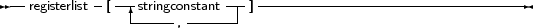

An assembler statement allows to insert assembler code right in the pascal code.
_________________________________________________________________________________________________________Assembler statements

___________________________________________________________________
More information about assembler blocks can be found in the Programmers guide. The register list is used to indicate the registers that are modified by an assembler statement in the assembler block. The compiler stores certain results in the registers. If the registers are modified in an assembler statement, the compiler should, sometimes, be told about it. The registers are denoted with their Intel names for the I386 processor, i.e., ’EAX’, ’ESI’ etc... As an example, consider the following assembler code:
asm
Movl $1,%ebx Movl $0,%eax addl %eax,%ebx end; [’EAX’,’EBX’]; |
This will tell the compiler that it should save and restore the contents of the EAX and EBX registers when it encounters this asm statement.
Free Pascal supports various styles of assembler syntax. By default, AT&T syntax is assumed for the 80386 and compatibles platform. The default assembler style can be changed with the {$asmmode xxx} switch in the code, or the -R command-line option. More about this can be found in the Programmers guide.